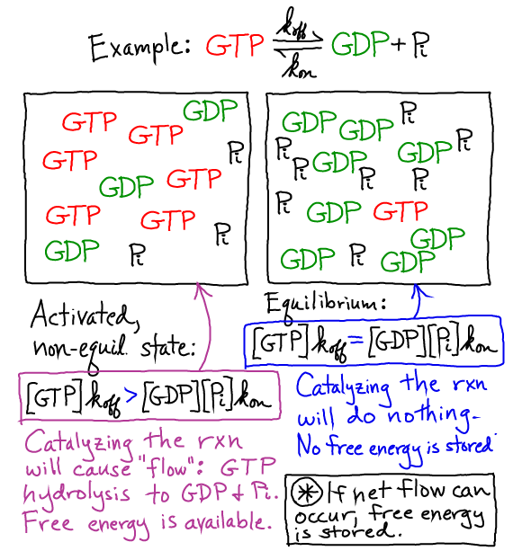
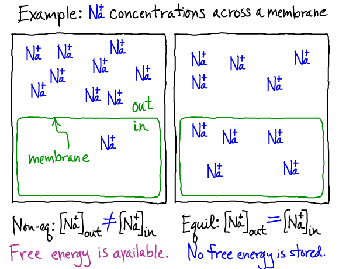
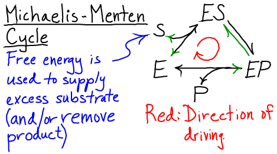
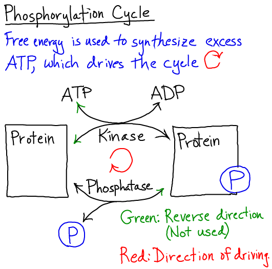

$
\newcommand{\conc}[1]{[\mathrm{#1}]}
\newcommand{\conceq}[1]{[\mathrm{#1}]^{\mathrm{eq}}}
\newcommand{\kcat}{k_{\mathrm{cat}}}
\newcommand{\kdt}{k_{\mathrm{dt}}}
\newcommand{\kdtsol}{k^{\mathrm{sol}}_{\mathrm{dt}}}
\newcommand{\kkeq}{K^{\mathrm{eq}}}
\newcommand{\kmmon}{\kon^{\mathrm{ES}}}
\newcommand{\kmmoff}{\koff^{\mathrm{ES}}}
\newcommand{\kconf}{k_{\mathrm{conf}}}
\newcommand{\koff}{k_{\mathrm{off}}}
\newcommand{\kon}{k_{\mathrm{on}}}
\newcommand{\ktd}{k_{\mathrm{td}}}
\newcommand{\ktdsol}{k^{\mathrm{sol}}_{\mathrm{td}}}
\newcommand{\ss}{\mathrm{SS}}
$
Free Energy is the Cell's Available Energy
Free energy is energy available to do work.
- It can be considered the analog of potential energy in a "thermal
environment" (where molecular collisions substantially alter the potential
and/or kinetic energies of objects of interest - i.e., proteins, solvent, etc.).
- Systems will move from a condition of high to low free energy if it is
possible: a ball will roll downhill in the absence of a barrier.
- The cell stores free energy in two primary ways:
- Any system that is out of equilibrium stores free energy that can be used
for work - e.g., to drive cellular processes such as transport, locomotion,
synthesis - or signalling processes.
Conversely, an equilibrium system stores no free/usable energy unless the conditions are changed.
Activated Carriers Store Free Energy

The cell maintains the concentration of an activated carrier (e.g., GTP or ATP) well above its equilibrium value so that there is always a driving force toward equilibrium (via the decomposition reaction).
Because there is a drive toward equilibrium, there is free energy which can be harnessed for work - as in the example of ATP-driven transporters.
Concentration Gradients across Membranes Store Free Energy

As in the case of activated carriers, gradients are also out of equlibrium: there is a driving force to equalize the concentrations of species across a membrane (assuming for simplicity no coupling among species).
A more quantitative discussion of this phenomenon is available.
The cell can use gradient-stored free energy, for instance in the case of active
transport.
The Cell Uses Free Energy in Different Ways
In general, the cell uses free energy it stores in gradients and activated
carriers to accomplish two types of things:
- (1) Work in the usual sense - i.e., energetically unfavorable tasks such as
transport (against a gradient), locomotion, and chemical synthesis.
- (2) Energy-neutral signalling processes, such as phosphorylation,
which involve a specific sequence of events that may leave the signal
carriers (e.g., proteins) unchanged.
How does the free energy remain stored without "running downhill"?
Free energy in the cell will not dissipate unless the transition from
the high-free-energy non-equilibrium state toward a lower free-energy state
is catalyzed: for activated carriers, enzymes are required; for gradients
across membranes, flow is enabled by channels or transporters.
How does the cell get energy?
The cell maintains its supply of ATP and other stored energy by metabolizing nutrients in an
ongoing cycle of ATP synthesis.
Cycles and the Cell's Non-equilibrium Use of Free Energy

Cellular processes typically function in cycles to re-use molecular
components, and free energy is used to drive such cycles in a single
direction by maintaining some components out of equilibrium - e.g.,
supplying excess ATP or other substrates for catalysis.
